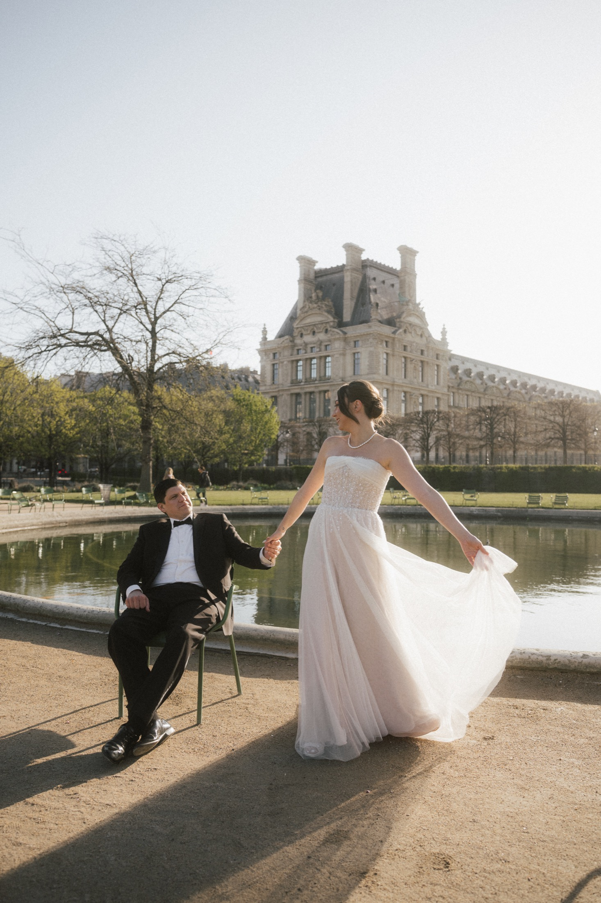

WELCOME TO THE BUILDING
Our worlds.
One home.
Love, cinema, instant memories, music—and the waves still taking shape. Choose a world and step into its world.
Explore OLA HQWorlds
Four entrances. Each its own world.
La Ola de Amor
Brianna + Jonathan. A journey through love, places, people, and the memories along the way.
Enter world ↗Blockbuster Wave
The film collection: favorites, reviews, artwork, and the stories around what we watch.
Enter the gallery ↗


Our Polaroid Wave
Instant film, real moments. Six collections of faces, nights, places, and life in motion.
Explore the portfolio ↗Wave 26
OLA. Albums, songs, and experiments at the intersection of feeling and sound.
Enter the music room ↗Building Systems
The spaces that support the rooms.Tools
A small creative workbench: palettes, a focus timer, and reusable prompts.
Open Tools ↗Archive / Version Museum
The story of how this building grew, and the editions that came before.
Visit the museum ↗Publish / Access
Understand the visitor view and how the rooms connect.
About public access ↗